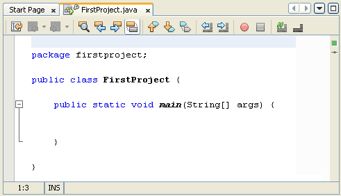

Java Comments
When you create a New Project in NetBeans, you'll notice that some text is greyed out, with lots of slashes and asterisks:

The greyed-out areas are comments. When the programme runs, comments are ignored. So you can type whatever you want inside of your comments. But it's usual to have comments that explain what is you're trying to do. You can have a single line comment by typing two slashes, followed by your comment:
//This is a single line comment
If you want to have more than one line, you can either do this:
//This is a comment spreading
//over two lines or more
Or you can do this:
/*
This is a comment spreading
over two lines or more
*/
In the comment above, note how it starts with /*. To end the comment, we have */ instead.
There's also something called a Javadoc comment. You can see two of these in the coding image on the previous page. A Javadoc comment starts with a single forward slash and two asterisks (/**) and ends with an asterisk and one slash ( */ ). Each line of the comment starts with one asterisk:
/**
*This is a Javadoc comment
*/
Javadoc comments are used to document code. The documented code can then be turned into an HTML page that will be helpful to others. You can see what these look like by clicking Run from the menu at the top of NetBeans. From the Run menu, select Generate Javadoc. There's not much to see, however, as you haven't written any code yet!
At this stage of your programming career, you can delete the comments that NetBeans generates for you. Here's our code again with the comments deleted:

In the next part, you'll learn about the structure of the above code, and how to run your programmes.